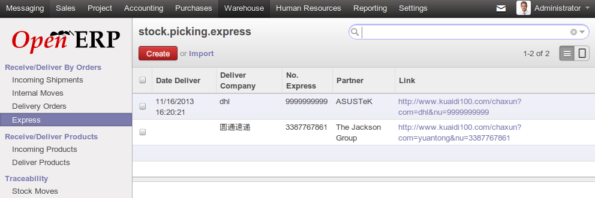
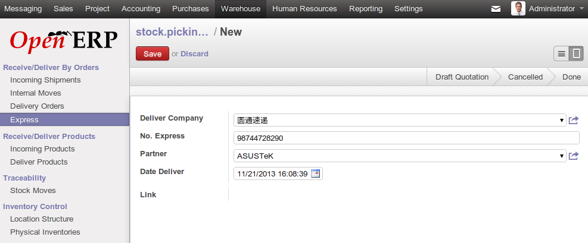

l10n_cn_express_track Module
Track the Express Delivery Status in China
Track your Express Delivery ("kuaidi") in China with OpenERP. More than 100 companies supported (DHL, SF, UPS, EMS, etc...)!
With this module, users can get a link directly in the OpenERP by entering tracking numbers and track the real-time delivery status by clicking this link.
To install this module, module web_url is needed, available here: http://www.emiprotechnologies.com/openerp/module7/
Next version will include a full API with state management.

